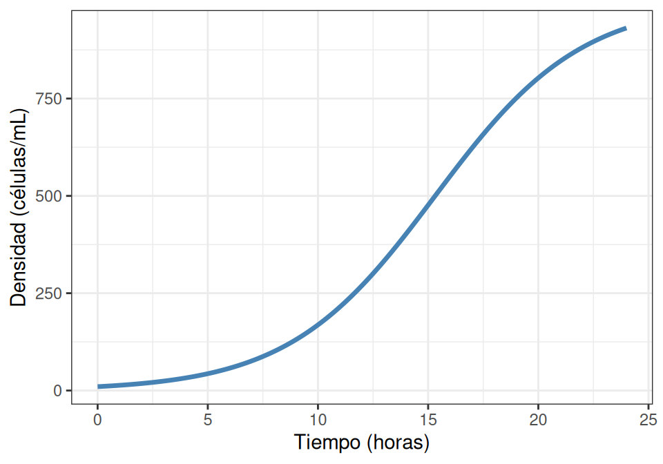

Escribiendo Reportes Científicos con Quarto
B0305 – Lab Eco Gral
https://ucr-ecologia.github.io/B0305-lab-eco-gral/
Prof. G. Avalos y T. Nakov
Escuela de Biologia, Universidad de Costa Rica
01 Aug 2025
¿Por qué Quarto para reportes científicos?
Problemas con Word tradicional üò§
Citas y bibliografía
- Copiar y pegar referencias manualmente
- Formato inconsistente
- Error al cambiar estilos de citación
- Bibliografía desorganizada
Figuras y tablas
- ‚ÄúLa figura se movi√≥ sola‚Äù ü§Ø
- Referencias cruzadas rotas
- Leyendas inconsistentes
- Problemas de resolución
Reproducibilidad
- ¿Cómo se generó esa gráfica?
- ¿Cuál análisis se usó?
- Imposible reproducir resultados
Ventajas de Quarto üöÄ
Todo en un lugar
- Texto + código + resultados
- Automáticamente actualizado
- Formato profesional
Citas automáticas
- Base de datos bibliográfica (BibTeX)
- Inserción automática:
[@autor2023] - Múltiples formatos: APA, Chicago, Nature…
Figuras inteligentes
- Generadas por código R/Python
- Referencias automáticas:
@fig-crecimiento - Numeración y leyendas consistentes
Múltiples formatos
- PDF para entregar
- HTML para web/presentación
- Word si es necesario
Instalación y configuración
1. Requisitos del sistema üîß
Quarto CLI (obligatorio)
Quarto es una aplicación independiente que debe instalarse en su sistema:
- Windows: Descargar de quarto.org
- Mac:
brew install quartoo descargar instalador - Linux:
sudo apt install quartoo descargar .deb/.rpm
Verificar instalación:
2. Configurar entorno R üì¶
Opción A: renv (recomendado)
Si tienen renv.lock del curso:
Verificar todo funciona:
Esto instalará automáticamente:
- quarto (paquete R para interfaz)
- knitr, ggplot2, dplyr
- Todas las dependencias necesarias
3. Pruebas y solución de problemas ⚠️
üö® Paso cr√≠tico: Probar PDF
# Crear archivo de prueba
cat("# Test\nHello world", file = "test.qmd")
# Probar HTML (debe funcionar)
quarto::quarto_render("test.qmd")
# Probar PDF (puede requerir TinyTeX)
quarto::quarto_render("test.qmd", output_format = "pdf")Si PDF falla → quarto install tinytex
Introducción a Markdown
¬øQu√© es Markdown? üìù
Markdown es un lenguaje de marcado ligero para dar formato a texto
- Fácil de leer en texto plano
- Fácil de escribir - solo símbolos simples
- Se convierte a HTML, PDF, Word…
Filosofía
“Un documento Markdown debe ser legible tal como está, sin verse como si hubiera sido marcado con etiquetas o instrucciones de formato”
— John Gruber (creador de Markdown)
Formato básico de texto
Código Markdown:
Resultado:
Título principal
Subtítulo
Sub-subtítulo
Texto en negrita
Texto en cursiva
Texto tachado
Párrafo normal con texto.
- Lista con viñetas
-
Segundo elemento
- Sub-elemento
- Lista numerada
- Segundo elemento
- Tercer elemento
Enlaces y citas científicas
Enlaces:
Citas bibliográficas:
Resultado:
Según Begon et al. (2006), las poblaciones…
El crecimiento logístico (Verhulst, 1838; Gotelli, 2008) es fundamental.
Como mencionan varios autores (Pearl & Reed, 1925; Begon et al., 2006)
Ecuaciones matemáticas
Inline math:
Display math:
Ecuaciones numeradas:
Resultado:
La población crece según \(N(t) = N_0 e^{rt}\)
\[N(t) = \frac{K}{1 + \left(\frac{K-N_0}{N_0}\right)e^{-rt}}\]
\[N(t) = N_0 e^{rt} \qquad(1)\]
Ver ecuación Equation 1 …
Código y resultados
Código R en Quarto:
#| label: fig-crecimiento
#| fig-cap: "Crecimiento de S. cerevisiae"
#| echo: true
library(ggplot2)
data <- data.frame(
tiempo = 0:24,
densidad = exp(0.2 * (0:24))
)
ggplot(data, aes(tiempo, densidad)) +
geom_line() +
labs(x = "Tiempo (h)",
y = "Densidad (cells/mL)")
Como se observa en @fig-crecimiento, el crecimiento es exponencial.Resultado ejecutado:
Como se observa en Figure 1, el crecimiento es exponencial.
La plantilla B0305
Estructura de archivos üìÅ
Su plantilla incluye varios archivos importantes:
B305-report-template-kit/
‚îú‚îÄ‚îÄ B305-report-template.qmd # üìù Plantilla principal
‚îú‚îÄ‚îÄ reference.docx # üìÑ Formato Word de referencia
‚îú‚îÄ‚îÄ references.bib # üìö Base de datos bibliográfica
‚îú‚îÄ‚îÄ apa.csl # üìã Estilo de citaci√≥n APA
‚îú‚îÄ‚îÄ styles.css # üé® Estilos HTML
‚îî‚îÄ‚îÄ how-to-knit.md # üìñ Instrucciones¡Todos deben estar en la misma carpeta! üìÇ
Configuración YAML
El encabezado YAML configura todo el documento:
---
title: "TÍTULO DEL REPORTE (12–15 palabras)"
author:
- name: "Nombre Apellido-Apellido"
affiliation: "Escuela de Biología, Universidad de Costa Rica..."
keywords: ["palabra clave 1", "palabra clave 2", ...]
format:
pdf:
pdf-engine: xelatex
mainfont: "Times New Roman"
fontsize: 12pt
linestretch: 2 # Doble espacio
html:
css: styles.css
docx:
reference-doc: reference.docx
bibliography: references.bib
csl: apa.csl
lang: es
---Múltiples formatos de salida
PDF (recomendado para entrega)
- Formato profesional
- Times New Roman, 12pt
- Doble espacio
- Márgenes correctos
HTML (para revisión)
- Rápido de generar
- Fácil de compartir
- Links clickeables
Estructura del reporte
# Resumen
**Resumen:** (máx. 250 palabras).
**Palabras claves:** palabra1; palabra2; palabra3; palabra4; palabra5
# INTRODUCCIÓN
Contexto, antecedentes, hipótesis...
# MATERIALES Y MÉTODOS
Descripción detallada de métodos...
# RESULTADOS
Presentación objetiva de resultados...
# DISCUSIÓN
Interpretación y comparación con literatura...
# LITERATURA CITADA
(Se genera automáticamente)Trabajando con citas
Base de datos bibliográfica (BibTeX)
El archivo references.bib contiene todas sus referencias:
@book{begon2006ecology,
title={Ecology: from individuals to ecosystems},
author={Begon, Michael and Townsend, Colin R and Harper, John L},
year={2006},
publisher={Blackwell publishing}
}
@article{verhulst1838notice,
title={Notice sur la loi que la population suit dans son accroissement},
author={Verhulst, Pierre Fran{\c{c}}ois},
journal={Correspondance math{\'e}matique et physique},
volume={10},
pages={113--126},
year={1838}
}Agregando nuevas referencias
Desde Google Scholar
- Buscar el artículo
- Click en “Citar”
- Click en “BibTeX”
- Copiar y pegar en
references.bib
Desde DOI
- Usar doi2bib.org
- Introducir DOI:
10.1038/nature12373 - Copiar resultado a
references.bib
Citando en el texto
Código Markdown:
<!-- Cita parentética -->
El crecimiento poblacional [@verhulst1838notice]
es fundamental.
<!-- Cita narrativa -->
Según @begon2006ecology, las poblaciones...
<!-- Múltiples citas -->
Varios autores [@verhulst1838notice; @gotelli2008primer]
han estudiado...
<!-- Solo año -->
@begon2006ecology mostraron...
<!-- Páginas específicas -->
Como indica @verhulst1838notice [p. 15], la ecuación...Resultado:
El crecimiento poblacional (Verhulst, 1838) es fundamental.
Según Begon et al. (2006), las poblaciones…
Varios autores (Verhulst, 1838; Gotelli, 2008) han estudiado…
Begon et al. (2006) mostraron…
Como indica Verhulst (1838, p. 15), la ecuación…
Figuras y tablas
Figuras desde R
Código R para figura:
#| label: fig-logistico
#| fig-cap: "Crecimiento logístico de S. cerevisiae"
#| fig-width: 6
#| fig-height: 4
#| echo: false
library(ggplot2)
t <- seq(0, 24, 0.1)
N <- 1000 / (1 + 99 * exp(-0.3 * t))
data <- data.frame(tiempo = t, densidad = N)
ggplot(data, aes(tiempo, densidad)) +
geom_line(color = "steelblue", size = 1.2) +
labs(x = "Tiempo (horas)",
y = "Densidad (células/mL)") +
theme_bw()
Como se observa en @fig-logistico...Opciones importantes:
- label: para referencias cruzadas
- fig-cap: para la leyenda
- echo: false para ocultar código
- fig-width y fig-height para dimensiones
Resultado ejecutado:

Como se observa en Figure 2, el crecimiento presenta una curva típica logística.
Tablas con código R
Código R para tabla:
#| label: tbl-parametros
#| tbl-cap: "Parámetros del modelo logístico"
library(knitr)
parametros <- data.frame(
Parámetro = c("K", "r", "N₀"),
Valor = c(987.3, 0.281, 10.2),
`Error estándar` = c(45.2, 0.025, 1.8),
Unidades = c("células/mL", "h⁻¹", "células/mL")
)
kable(parametros, digits = 3)
Los parámetros estimados (@tbl-parametros)...Resultado ejecutado:
| Parámetro | Valor | Error.estándar | Unidades |
|---|---|---|---|
| K | 987.300 | 45.200 | células/mL |
| r | 0.281 | 0.025 | h⁻¹ |
| N₀ | 10.200 | 1.800 | células/mL |
Los parámetros estimados (Table 1) muestran que la capacidad de carga es aproximadamente 987 células/mL.
Figuras externas
Las observaciones se realizaron con el microscopio mostrado en Figure 3…
Formatos recomendados:
- PNG para diagramas y screenshots
- JPG para fotografías
- PDF para figuras vectoriales
- SVG para gráficos web
Flujo de trabajo recomendado
Pasos para crear un reporte
1. Preparar el workspace
- Crear nueva carpeta:
- Nombrar:
mi-reporte-ecologia
- Nombrar:
- Descargar plantilla:
- Ir al repositorio del curso
- Descargar
B305-report-template-kit.zip
- Extraer en la carpeta creada
- Ir al repositorio del curso
- En RStudio:
- File → New Project → Existing Directory
- Seleccionar
mi-reporte-ecologia
- Renombrar
B305-report-template.qmd→mi-reporte.qmd
- File → New Project → Existing Directory
Verificar archivos:
- ✅ mi-reporte.qmd
- ✅ references.bib
- ✅ reference.docx
- ✅ apa.csl
- ✅ styles.css
2. Configurar encabezado
- Cambiar título y autor
- Ajustar palabras clave
- Verificar archivos auxiliares
3. Escribir contenido
- Usar estructura científica estándar
- Incorporar código R inline
- Citar literatura relevante
Durante el desarrollo
Renderizar en RStudio (fácil)
Opción A: Botón Render
- Click en “Render” en la barra superior
- Automáticamente detecta formato por defecto
- Muestra preview en Viewer pane
Opción B: Render específico
- Click en ▼ junto a “Render”
- Seleccionar: “Render PDF”, “Render HTML”, etc.
Respaldos regulares
- Guardar en la nube (Google Drive, Dropbox)
- Enviar por email a ustedes mismos
- Usar repositorio GitHub
Consejos para reportes exitosos
Organización de archivos
mi-proyecto/
├── mi-reporte.qmd # Documento principal
├── references.bib # Bibliografia
├── data/ # Datos
│ ├── crecimiento.csv
│ └── experimento.xlsx
├── scripts/ # Código R auxiliar
│ └── analisis.R
├── figures/ # Figuras externas
│ └── setup-experimental.jpg
└── output/ # Archivos generados
├── mi-reporte.pdf
└── mi-reporte.htmlBuenas prácticas
- Comentar el código R para futuro yo
- Usar nombres descriptivos para chunks y figuras
- Verificar referencias antes de entregar
- Revisar formato final en PDF
Demostración práctica
Crear un reporte simple
Vamos a crear juntos un reporte básico paso a paso:
1. Configuración inicial
- Copiar plantilla
- Cambiar título y autor
- Ajustar palabras clave
2. Agregar contenido
- Escribir introducción simple
- Incluir una figura R
- Agregar una cita
3. Renderizar
- Generar HTML para revisión
- Generar PDF final
¡Manos a la obra! üöÄ
Su próximo reporte será:
- Profesional y reproducible
- Con citas automáticas
- Figuras y tablas numeradas
- Múltiples formatos de salida
¬øPreguntas? ü§î
Para la próxima semana
Práctica requerida
- Descargar la plantilla desde el repositorio del curso
- Crear un reporte corto (2-3 páginas) sobre cualquier tema de ecología
- Incluir: Al menos 2 citas, 1 figura generada con R, 1 tabla
- Renderizar a PDF y HTML
Bibliografia
Documentación oficial
Markdown y matemáticas
Gestión bibliográfica
- Zotero - Gestor gratuito
- Google Scholar - Búsqueda académica
- doi2bib - DOI a BibTeX

B0305 – Lab Eco Gral